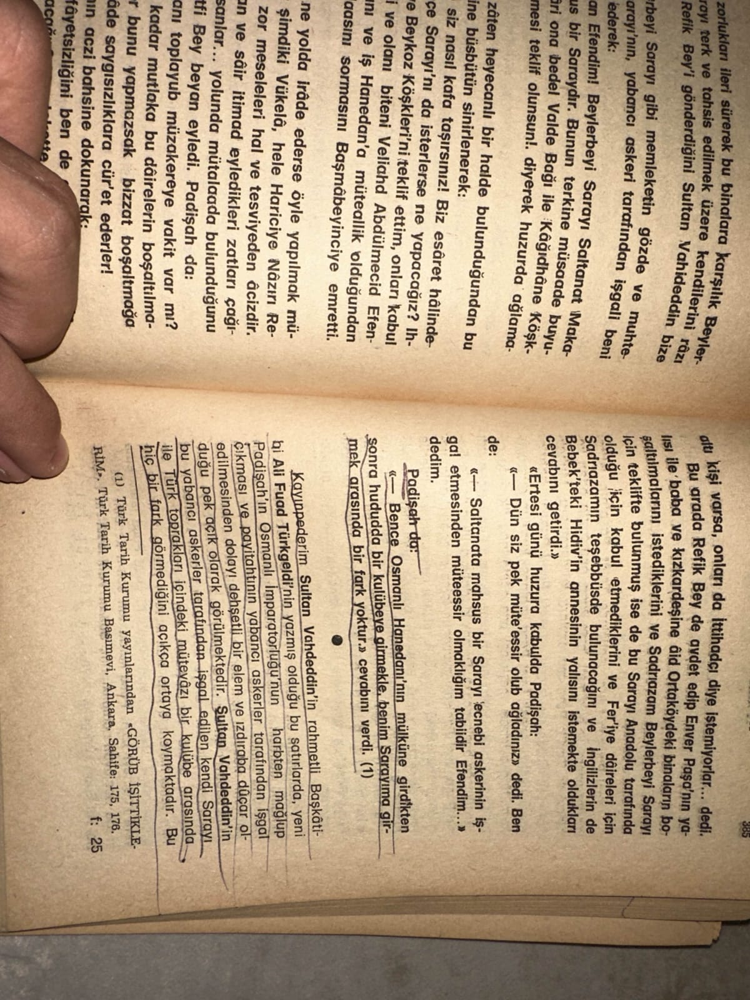
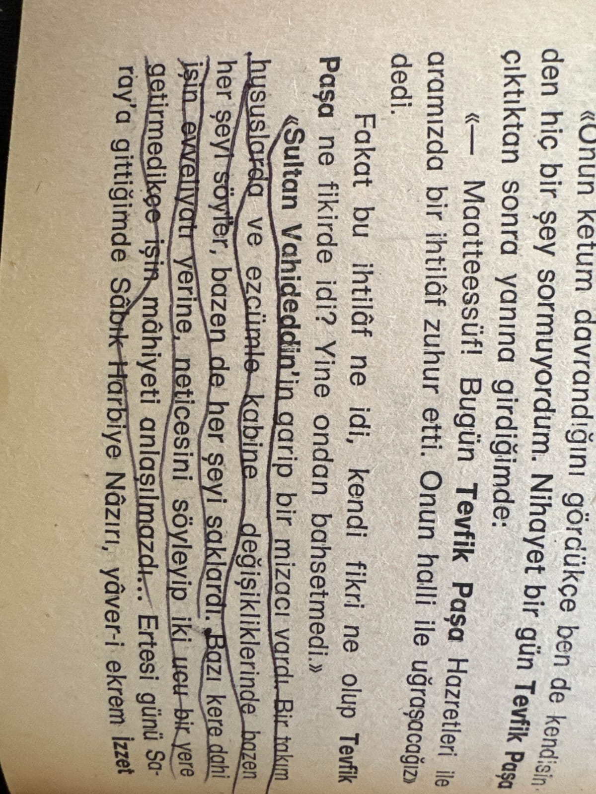
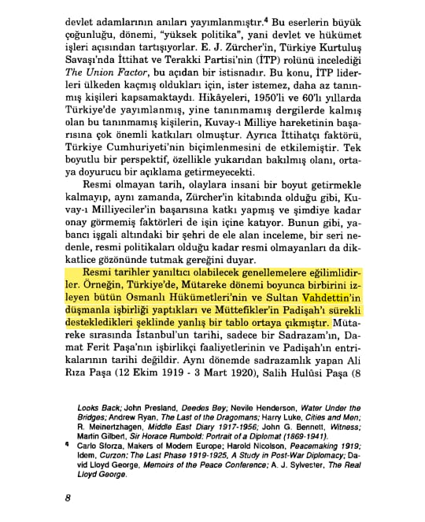
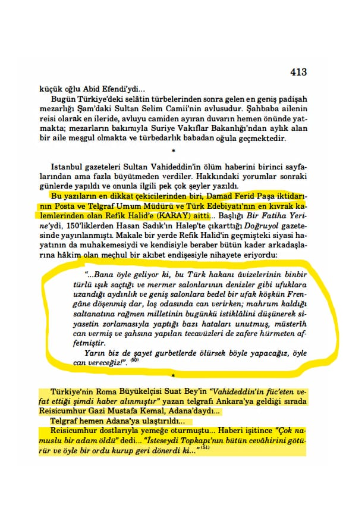
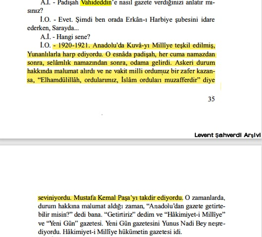
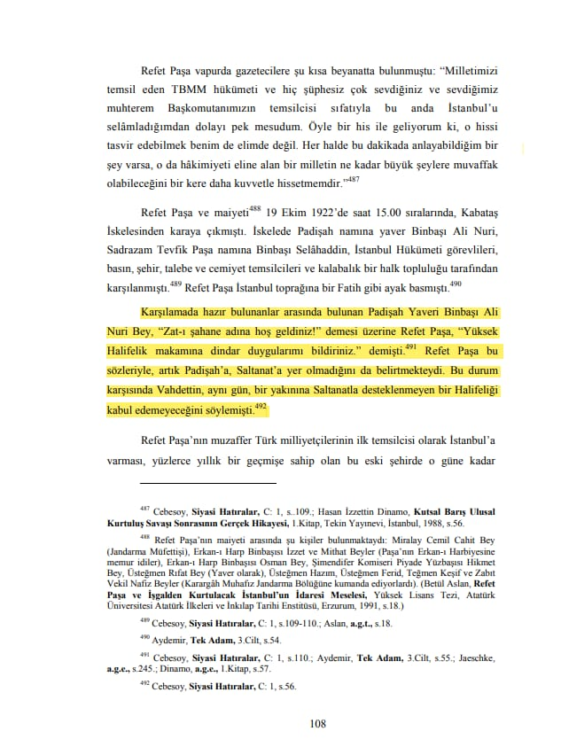
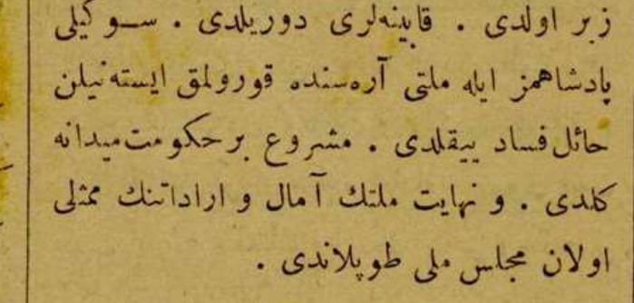
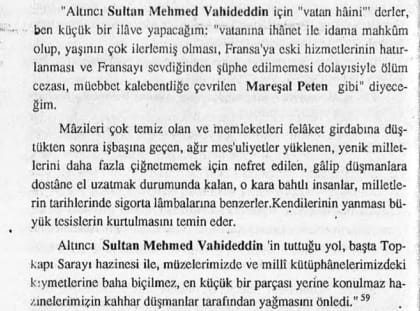
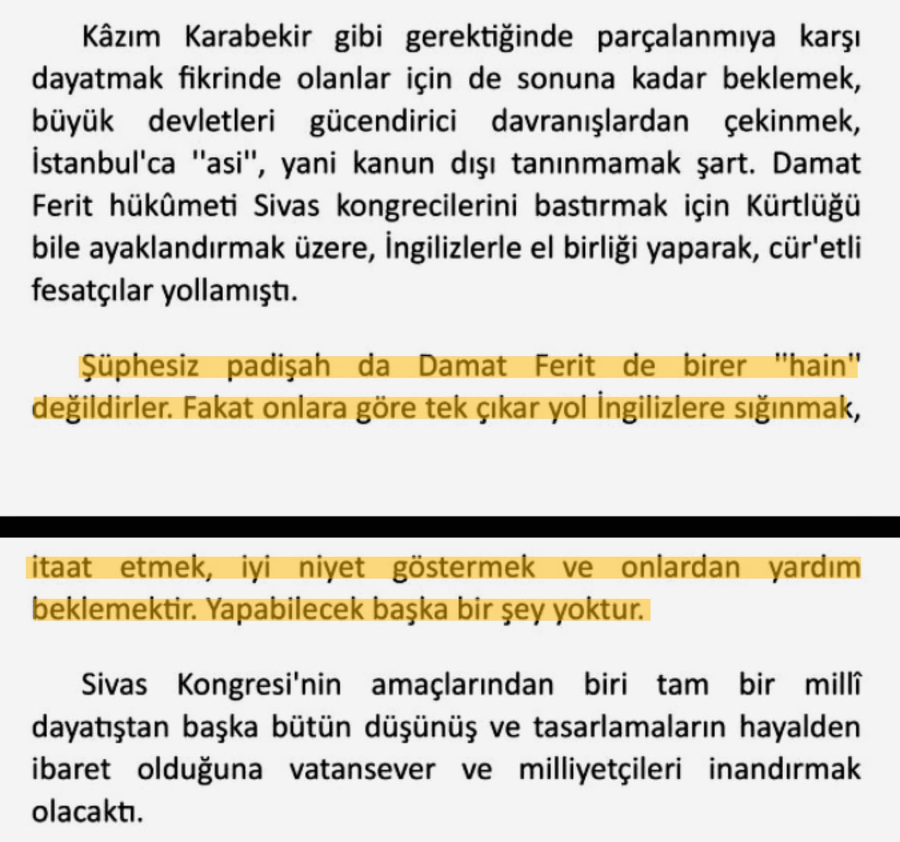
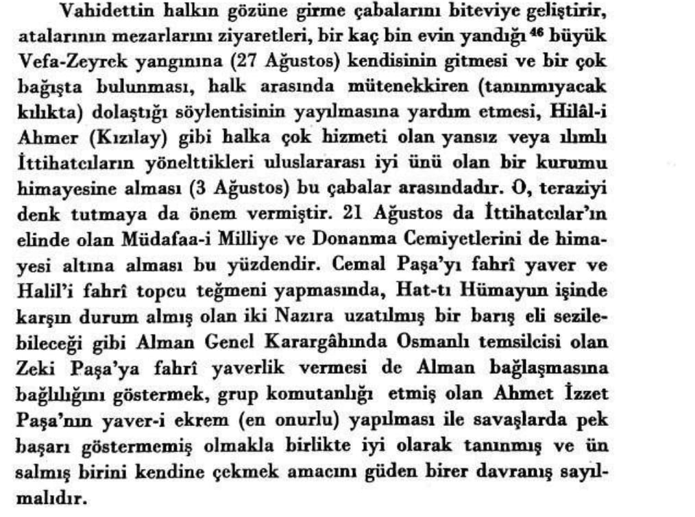

📚İsmail Hakkı Okday, Yanya’dan Ankara’ya, s.385 Bkz. Görüp işittiklerin s.175-176

İsmail Hakkı Okdayın Sultan Vahideddin’in Mizacını anlatması 📚Yanya’dan Ankara’ya, s.390

Sultan Vahideddin Kızını İsteyen Şii İran Şahına Hiddetli cevabı 📚Yanya’dan Ankara’ya, s.398

📚 Bilge Criss-İşgal Altında İstanbul 1918 -1923, s.8

Mustafa Kemalin Sultan Vahideddin vefatını öğrendikten sonraki düşüncesi 📚 Murat Bardakçı, Şahbaba, s.413

📌 *Sultan Vahideddinin Hahambaşı sözünün iftira ve uydurma olması* 📚 Ahmet İzzet Paşa, Feryadım, C.2, s.98-99

📌 *Arı İnan Ve İsmail Hakkı Okdayın Röportajından bir kesit.* 📚 Arı İnan, Tarihe Tanıklık Edenler, s.35

📚 Refet Bele’nin Askeri Ve Siyasi Hayatı 1881-1963, Aktaran: Halit Kaya, s.108 📌 **Sultan Vahideddinin Saltanatsız Hilafeti Kabul etmemesi. **

📌 **Mustafa Kemalin Beyanı Sevgili Padişahımız ile milleti arasında kurulmak istenilen hail fesad(korku,endişe) yıkıldı . ** 📚 İzmir'e Doğru Gazetesi, sayı 37, s.1 Tarih: 1 mart 1920

📚 Reşad Ekrem Koçu, Osmanlı Padişahları, s.439

📌 *Atatürk döneminin önde gelen yazarlarından,gazetecilerinden ve düşünürlerinden biri olan Falih Rıfkı Atay’ın Çankaya adlı kitabında da bahsettiği gibi Vahdettin Han’ın hain olmadığına dair bir kanıt* 📚 Falih Rıfkı Atay, Çankaya s.225
